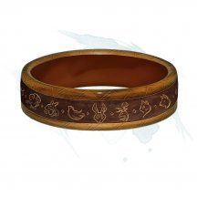
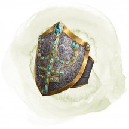
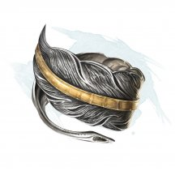
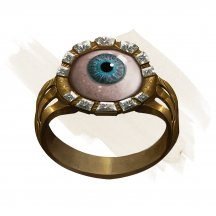
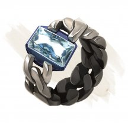
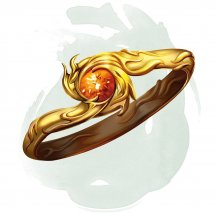
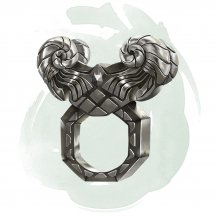
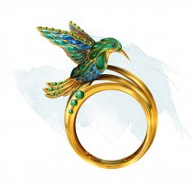
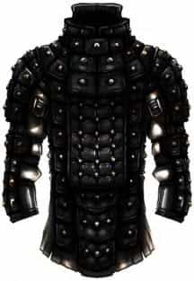
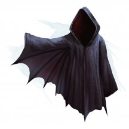

- Чудесный предмет, редкий (требуется настройка волшебником)
- Рекомендованная стоимость: 501-5 000 зм
Эта девственная книга слабо пахнет неопределённым приятным запахом. Найденная книга содержит следующие заклинания: антипатия/симпатия [antipathy/sympathy], внушение [suggestion], гипнотический узор [hypnotic pattern], изменение памяти [modify memory], очарование личности [charm person], подчинение личности [dominate person] и речь златоуста [enthrall]. Эта книга функционирует для вас как книга заклинаний.
Когда вы держите книгу, вы можете использовать её в качестве заклинательной фокусировки для ваших заклинаний волшебника.
Книга имеет 3 заряда и ежедневно восстанавливает 1к3 заряда на рассвете. Вы можете использовать заряды следующими способами, пока держите книгу:
- Если вы потратите 1 минуту на изучение книги, вы можете израсходовать 1 заряд и заменить одно из своих подготовленных заклинаний волшебника на другое заклинание из книги. Новое заклинание должно принадлежать школе Очарования.
- Когда вы накладываете заклинание школы Очарования, вы можете потратить 1 заряд, чтобы выбранная вами цель совершила следующий спасбросок от заклинания с помехой.
Магические предметы
Официальные материалы от Wizards of the Coast и от издательств, поддерживаемых этой компанией.
- Чудесный предмет, редкий (требуется настройка)
- Рекомендованная стоимость: 501-5 000 зм
Этот драконий коготь был покрыт расплавленным серебром, по которому была выгравирована руна Вирм (дракон). Коготь обладает следующими свойствами.
Драконобой. Действием, вы указываете когтем на дракона в пределах 30 футов от вас. Дракон должен преуспеть в спасброске Телосложения Сл 15 или получит уязвимость ко всем видам урона до конца вашего следующего хода. Это свойство может быть использовано лишь трижды. Коготь восполняет эти использования на рассвете.
Драконий щит. Пока коготь виден на вас, вы получаете сопротивление урону, который будет нанесён оружием дыхания дракона.
Драконья защита. Вы можете перенести магию когтя в другое место нарисовав руну Вирм на земле пальцем. Это место становится центром сферической области магии, радиусом 100 футов, закреплённой за этим местом. Перенос требует 8 часов работы, и чтобы коготь находился в 5 футах от вас. В конце этого ритуала, коготь уничтожается, а область получает следующие свойства:
Драконы получают помеху на спасброски и не могут иметь скорость полёта более 10 футов, пока находятся в этой сфере 100 футов радиусом.
- Чудесный предмет, редкий (требуется настройка)
- Рекомендованная стоимость: 501-5 000 зм
Эти тяжёлые перчатки из бурого железа сделаны в форме когтей бурого увальня и закрывают руки носителя вплоть до локтей. Если вы носите эти перчатки, то получаете скорость копания 20 футов и можете раскапывать даже твёрдый камень со скоростью 1 фут в раунд.
Кроме того, пока вы носите когти, то можете использовать их в качестве рукопашного оружия.
Считается, что вы владеете этим оружием. При попадании когти наносят рубящий урон 1к8 (ваш модификатор Силы добавляется к броскам атаки и урона в обычном порядке).
Если вы носите когти, то не можете манипулировать объектами и использовать заклинания с соматическим компонентом.
- Чудесный предмет, редкий (требуется настройка)
- Рекомендованная стоимость: 501-5 000 зм
Тыльная сторона этой обветренной кожаной перчатки украшена тремя большими металлическими крючками в форме когтей крота. На ладони перчатки вышита руна «Гора».
Перчатка считается простым рукопашным оружием со свойствами «фехтовальное» и «лёгкое», и наносит 1к4 рубящего урона при попадании. Пока вы настроены на перчатку, вы получаете скорость копания, равную вашей скорости ходьбы, и слепое зрение до 15 футов.
Пробуждение руны. Действием вы можете пробудить руну перчатки, чтобы укрепить себя твердостью земли. Потратьте и бросьте количество неизрасходованных Костей Хитов, с максимумом равным вашему бонусу мастерства. Затем вы восстанавливаете количество хитов, равное результату броска плюс ваш модификатор Телосложения.
После того, как руна была пробуждена, она не может быть пробуждена снова до следующего рассвета.
- Чудесный предмет, редкий (требуется настройка волшебником)
- Рекомендованная стоимость: 501-5 000 зм
Страницы этой книги сделаны из кожи исчадий, а на обложке выгравирована схема Великого Колеса мультивселенной. Найденная книга содержит следующие заклинания: врата [gate], изгнание [banishment], магический круг [magic circle], планарные узы [planar binding], поиск фамильяра [find familiar] и призыв духа стихии [summon elemental]. Эта книга функционирует для вас как книга заклинаний.
Когда вы держите книгу, вы можете использовать её в качестве заклинательной фокусировки для ваших заклинаний волшебника.
Книга имеет 3 заряда и ежедневно восстанавливает 1к3 заряда на рассвете. Вы можете использовать заряды следующими способами, пока держите книгу:
- Если вы потратите 1 минуту на изучение книги, вы можете израсходовать 1 заряд и заменить одно из своих подготовленных заклинаний волшебника на другое заклинание из книги. Новое заклинание должно принадлежать школе Вызова.
- Когда вы накладываете заклинание школы Вызова, которое вызывает или создает одно существо, вы можете потратить 1 заряд, чтобы предоставить этому существу преимущество на броски атаки на 1 минуту.
- Если вы потратите 1 минуту на изучение книги, вы можете израсходовать 1 заряд и заменить одно из своих подготовленных заклинаний волшебника на другое заклинание из книги. Новое заклинание должно принадлежать школе Вызова.
- Доспех (кожаный доспех), редкий (требуется настройка)
- Рекомендованная стоимость: 501-5 000 зм
Странные ритуалы превратили тело голема из плоти в этот частично разумный костюм из кожаных доспехов.
Пока вы носите этот доспех, вы получаете бонус +1 к КД и спасброскам от заклинаний и других магических эффектов. Кроме того, вы получаете следующие преимущества:
- Неизменяемая форма. Вы невосприимчивы к любому заклинанию или эффекту, которые могут изменить вашу форму.
- Поглощение электричества. Вы получаете сопротивление урону электричеством. Всякий раз, когда вы получаете урон электричеством, вы получаете 5 временных хитов.
Проклятие. Этот доспех проклят и настройка на него распространяет проклятие на вас. Пока проклятие не будет снято заклинанием снятие проклятия [remove curse] или подобной магией, вы не желаете расставаться с доспехами. Кроме того, пока вы носите проклятую броню, вы получаете следующие свойства:
- Отвращение к огню. Если вы получаете урон огнём, вы совершаете с помехой броски атаки и проверки характеристик до конца вашего следующего хода.
- Берсерк. Всякий раз, когда по вам наносится критическое попадание, бросьте к6. При "6" броня заставляет вас сойти с ума. В каждый свой ход в состоянии берсерка вы атакуете ближайшее существо, которое видите. Если поблизости нет существ, к которым можно было бы подойти и атаковать, вы атакуете объект, отдавая предпочтение объекту меньшего размера, чем вы сами. Как только доспех заставляет вас сойти с ума, его нельзя снять. Вы продолжаете атаковать до тех пор, пока не станете недееспособным или пока другое существо не сможет успокоить вас соответствующей магией (например, заклинанием умиротворение [calm emotions]) или успешной проверкой Харизмы (Убеждение) Сл 15.
- Чудесный предмет, редкий (требуется настройка)
- Рекомендованная стоимость: 501-5 000 зм
Иллюстрации в этой колоде карт оракула слегка перемещаются или изменяются при непрямом наблюдении. Когда вы заканчиваете продолжительный отдых, вы можете потратить 10 минут на то, чтобы свериться с картами в поисках предзнаменования предстоящего дня. Бросьте к20 и запишите выпавшее значение. Один раз в течение следующих 8 часов, сразу после того, как существо в пределах 60 футов от вас совершает проверку характеристик, бросок атаки или спасбросок, вы можете использовать свою реакцию, чтобы отменить этот бросок к20; и существо должно использовать значение, которое вы выбросили, вместо своего броска.
Кроме того, держа карты в руках, вы можете наложить с их помощью заклинание предсказание [divination]. Как только это свойство будет использовано, оно не сможет быть использовано снова до следующего рассвета.

- Чудесный предмет, редкий
- Рекомендованная стоимость: 251-2 500 зм
Это полая металлическая трубка длинной 1 фут весит 1 фунт. Вы можете действием ударить по ней и направить на предмет, находящийся в пределах 120 футов от вас, который можно открыть, например, дверь, люк или замок. Трубка издаёт чистый звук, и один замок или засов на предмете отпирается, за исключением тех случаев, когда звук не может достигнуть цели. Если на предмете не остаётся запирающих элементов, то предмет открывается сам по себе.
Этот предмет может быть использован десять раз. После десятого использования он трескается и становится непригодным для использования.

- Кольцо, редкое
- Рекомендованная стоимость: 501-5 000 зм
У этого кольца есть 3 заряда, и оно ежедневно восстанавливает 1к3 заряда на рассвете. Нося это кольцо, вы можете действием потратить 1 заряд, чтобы наложить одно из следующих заклинаний:
- Дружба с животными [animal friendship] (Сл спасброска 13).
- Ужас [fear] (Сл спасброска 13), нацеливается только на зверей с Интеллектом 3 или ниже.
- Разговор с животными [speak with animals].
- Кольцо, редкое (требуется настройка)
- Рекомендованная стоимость: 501-5 000 зм
Если вы умираете, нося это кольцо из серого хрусталя, то вы исчезаете и вновь появляетесь в свободном пространстве в пределах 5 футов от места, где вы исчезли (или в ближайшем свободном пространстве). Вы получаете количество хитов, равное 3к6 + ваш модификатор Телосложения. Если ваш максимум хитов меньше, чем количество хитов, которые вы восстановили, ваш максимум хитов увеличивается до восстановленных значений. Если у вас есть какая-либо степень истощения, уменьшите её на 1. Как только кольцо активируется, оно обращается в пыль и разрушается.

- Кольцо, редкое (требуется настройка)
- Рекомендованная стоимость: 501-5 000 зм
Вы получаете бонус +1 к КД и спасброскам, пока носите это кольцо.

- Кольцо, редкое (требуется настройка)
- Рекомендованная стоимость: 501-5 000 зм
Если вы падаете, нося это кольцо, вы опускаетесь на 60 футов в раунд и не получаете урон от падения.

- Кольцо, редкое (требуется настройка)
- Рекомендованная стоимость: 501-5 000 зм
Нося это кольцо, вы можете действием произнести его командное слово. Сделав это, вы сможете видеть через твёрдую материю в течение 1 минуты. Радиус этого зрения — 30 футов. Для вас твёрдые предметы в этом радиусе выглядят прозрачными и не препятствуют проходить сквозь них свету. Это зрение может проникать сквозь 1 фут камня, 1 дюйм обычного металла или 3 фута дерева или земли. Более толстые препятствия, а также тонкий лист свинца блокируют обзор.
Каждый раз, когда вы используете это кольцо повторно до совершения продолжительного отдыха, вы должны преуспеть в спасброске Телосложения Сл 15, иначе получите одну степень истощения.

- Кольцо, редкое (требуется настройка)
- Рекомендованная стоимость: 501-5 000 зм
Если вы носите это кольцо, труднопроходимая местность не заставляет вас тратить дополнительное перемещение. Кроме того, магия не может ни уменьшить вашу скорость, ни сделать вас парализованным или опутанным.

- Кольцо, редкое (требуется настройка)
- Рекомендованная стоимость: 501-5 000 зм
Вы обладаете сопротивлением одному виду урона, пока носите это кольцо. Драгоценный камень в кольце указывает на этот вид урона, который Мастер выбирает самостоятельно или с помощью данной таблицы:
к10 Вид урона Камень 1 Кислота Жемчужина 2 Холод Турмалин 3 Огонь Гранат 4 Силовое поле Сапфир 5 Электричество Цитрин 6 Некротическая энергия Гагат 7 Яд Аметист 8 Психическая энергия Жадеит 9 Излучение Топаз 10 Звук Шпинель

- Кольцо, редкое (требуется настройка)
- Рекомендованная стоимость: 501-5 000 зм
У этого кольца 3 заряда, и оно ежедневно восстанавливает 1к3 заряда на рассвете. Нося это кольцо, вы можете действием потратить от 1 до 3 зарядов, чтобы совершить дальнобойную атаку заклинанием против одного существа, видимого в пределах 60 футов. Кольцо создаёт призрачную голову барана и совершает атаку с бонусом +7. При попадании за каждый использованный вами заряд цель получает урон силовым полем 2к10 и толкается на 5 футов от вас.
В качестве альтернативы, вы может действием потратить от 1 до 3 зарядов, чтобы попытаться сломать предмет, видимый в пределах 60 футов, который никто не несёт и не носит. Кольцо совершает проверку Силы с бонусом +5 за каждый использованный заряд.

- Кольцо, редкое (требуется настройка)
- Рекомендованная стоимость: 501-5 000 зм
У этого кольца 3 заряда, и оно ежедневно восстанавливает 1к3 заряда на рассвете. Если вы проваливаете спасбросок Ловкости, когда носите его, вы можете реакцией потратить 1 заряд, чтобы спасбросок стал успешным.

- Кольцо, редкое (требуется настройка)
- Рекомендованная стоимость: 501-5 000 зм
Это кольцо хранит заклинания, наложенные на него, позволяя использовать их владельцу, настроенному на кольцо. Кольцо может хранить до 5 уровней заклинаний одновременно. Когда кольцо находят, оно хранит 1к6 − 1 уровень заклинаний, которые выбирает Мастер.
Любое существо может наложить заклинание с уровнем от 1 до 5 на кольцо, касаясь его в процессе накладывания. Заклинание не оказывает эффекта сейчас, а просто сохраняется в кольце. Если кольцо не может удержать заклинание, заклинание тратится безо всякого эффекта. Занимаемое пространство определяется уровнем ячейки, использованной для накладывания заклинания.
Нося это кольцо, вы можете накладывать любые хранящиеся в нём заклинания. Заклинание использует уровень ячейки, Сл спасброска, бонус атаки и базовую характеристику исходного заклинателя, но во всём остальном считается, что заклинание наложили вы. Наложенное кольцом заклинание больше не хранится в нём и освобождает пространство.
- Чудесный предмет, редкий
- Рекомендованная стоимость: 501-5 000 зм
Концертина-это менее очаровательная разновидность аккордеона.
В дополнение к тому, чтобы выбить убийственную польку, существо, играющее на концертине, может использовать Действие, чтобы создать область тумана или воды диаметром до 30 футов и глубиной 6 дюймов, которая мгновенно замерзает.
Однажды использованное, это свойство концертины не может быть использована снова до следующего рассвета.
Любые существа, коснувшиеся этой области, должны преуспеть в спасброске Ловкости Сл 20 или станет опутанным льдом. Действием опутанное существо может попытаться высвободить себя изо льда или другое существо может попытаться его высвободить совершив это при успешную проверку Силы (Атлетика) Сл 20. Персонаж, высвобожденный изо льда, больше не считается опутанным. Лед тает через час после создания.
- Чудесный предмет, редкий (требуется настройка бардом)
- Рекомендованная стоимость: 501-5 000 зм
Держа эту концертину, вы получаете бонус +2 к Сл спасбросков против ваших заклинаний барда.
Действием вы можете использовать концертину, чтобы наложить заклинание неудержимая пляска Отто [Otto’s irresistible dance] с помощью этого предмета. Это свойство концертины не может быть использовано вновь до следующего рассвета.
- Чудесный предмет, редкий (требуется настройка)
- Рекомендованная стоимость: 501-5 000 зм
Этот зазубренный железный венец украшен орнаментом в виде руны «Враг». При ношении, корона светится бледным светом, взывая к ярости владельца, чтобы поразить противников ужасом.
Когда вы совершаете бросок атаки против существа и попадаете по нему, будучи облачённым в эту корону, вы можете потратить и бросить одну из своих Костей Хитов. Существо получает дополнительный урон психической энергией, равный выпавшему числу.
Пробуждение руны. Вы можете действием пробудить руну короны, чтобы с её помощью наложить заклинание ужас [fear] (Сл спасброска 15); заклинание имеет продолжительность 1 минуту и не требует концентрации. После того, как руна была пробуждена, она не может быть пробуждена снова до следующего рассвета.
- Чудесный предмет, редкий
- Рекомендованная стоимость: 501-5 000 зм
Этот котёл сделан из толстой меди, позеленевшей от времени. Он имеет 4 фута в ширину, диаметр отверстия 3½ фута, весит 50 фунтов и может вместить до 30 галлонов жидкости. На его выпуклых боках выбиты изображения сатиров и нимф, отдыхающих с черпаками в руках. Котел имеет крышку и боковые ручки. Он стоит на пяти маленьких когтистых лапках, которые не дают ему опрокинуться.
Если в котел налить 1 галлон воды и мешать в течение 1 минуты, она превращается в сытное, горячее рагу, которым можно накормить до 4-х человек. Тушеное мясо остается горячим, пока находится в котле, и охлаждается естественным образом после его вынимания. Снаружи котел остается безопасным для прикосновения, несмотря на жар тушеного мяса.
Котел может создать тушеное мясо три раза. После чего он перестает функционировать до следующего рассвета, пока он восстанавливается.

- Доспех (проклёпанный кожаный), редкий
- Рекомендованная стоимость: 501-5 000 зм
Пока вы носите этот доспех, вы получаете бонус +1 к КД. Вы также можете бонусным действием произнести его командное слово и заставить доспех принять облик обычной одежды или любого другого доспеха. Вы сами решаете, как он будет выглядеть, включая цвет, стиль и аксессуары, но доспех при этом сохраняет свой объём и вес. Иллюзорный облик длится до тех пор, пока вы не используете это свойство повторно или не снимете доспех.
- Оружие (любой лук), редкое (требуется настройка)
- Рекомендованная стоимость: 501-5 000 зм
Плечи этого магического лука имеют форму крыльев дракона, а само оружие пропитано силой дыхания цветного, самоцветного или металлического дракона. Когда вы попадаете по существу атакой совершенной этим магическим луком, цель дополнительно получает 1к6 урона того же типа, что и дыхание находящееся в луке - звуком, излучением, кислотой, некротической энергией, огнём, психической энергией, силовым полем, холодом, электричеством или ядом.
Если вы не вкладываете боеприпас в оружие, оно производит свой собственный, автоматически создавая один магический боеприпас, когда вы натягиваете тетиву.
Боеприпас, создаваемый луком, исчезает в тот момент, когда он попадает в цель или промахивается

- Чудесный предмет, редкий (требуется настройка)
- Рекомендованная стоимость: 501-5 000 зм
Пока вы носите этот плащ, вы можете действием произнести командное слово. Это превратит плащ в пару крыльев летучей мыши, или птицы на вашей спине на 1 час или пока вы не повторите командное слово действием. Крылья дают вам скорость полёта 60 футов. Если они исчезают, вы не можете повторно вызвать их 1к12 часов.